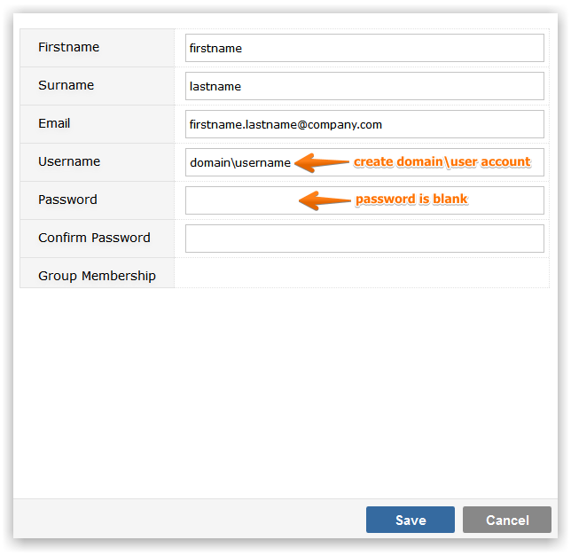
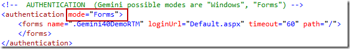
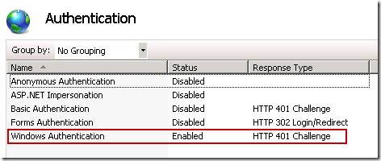
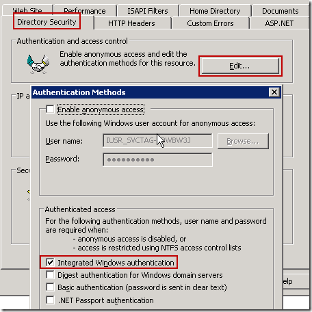

By default Gemini uses forms authentication (username/password) but you can also use Windows authentication.
Before enabling Windows Authentication, ensure you first create a new Gemini user that will allow you to login after the switch to Windows Authentication has been made.

NoteNo password is required on the user account, just ensure the username is a valid and fully qualified domain\user account.
Change the mode from Forms to Windows in the Gemini web.config file.

Select the Authentication setting for your web application.
Now enable Windows Authentication and disable all other authentication options.

Under Directory Security, edit Authentication and access control and then ensure that only Integrated Windows authentication is selected.

You may need to ensure that the IIS Application Pool assigned to Gemini is using the Network Service account.
Restart your Gemini application by running 'IISRESET' from the command line or by re-starting the Gemini application pool.